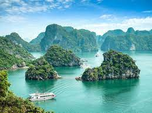

Hạ Long

Rời xa núi rừng Tây Bắc, chuyến xe của Cuồng Du Lịch tiếp tục đưa bạn đến với một vùng vịnh nổi tiếng nhất Việt Nam, điểm du lịch được UNESCO công nhận là di sản thiên nhiên văn hóa thế giới, đó chính là Vịnh Hạ Long.
Đã từng là điểm du lịch Việt Nam bị ngủ quên, giờ đây Hạ Long đang vươn mình phát triển hơn bao giờ hết. 2 năm trở lại đây, du lịch Vịnh Hạ Long đã đón hàng triệu lượt khách tới tham quan, khám phá. Biển Bãi Cháy – Hạ Long được tôn tạo trở thành một trong những bãi biển đẹp nhất miền Bắc. Khám phá Hạ Long là khám phá những vùng vịnh, những hòn đảo, nào là vinh Bái Tử Long, Đảo Tuần Châu, Hòn Trống Mái, Hang Sửng Sốt, Đảo Ti Tốp, Động Thiên Cung, Đảo Ngọc Vừng, Hang Luồn,vv...